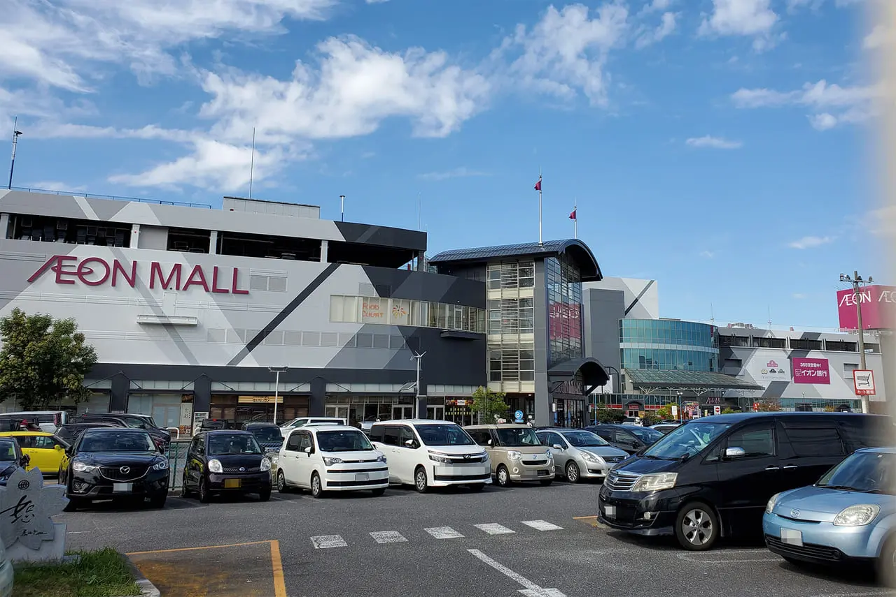
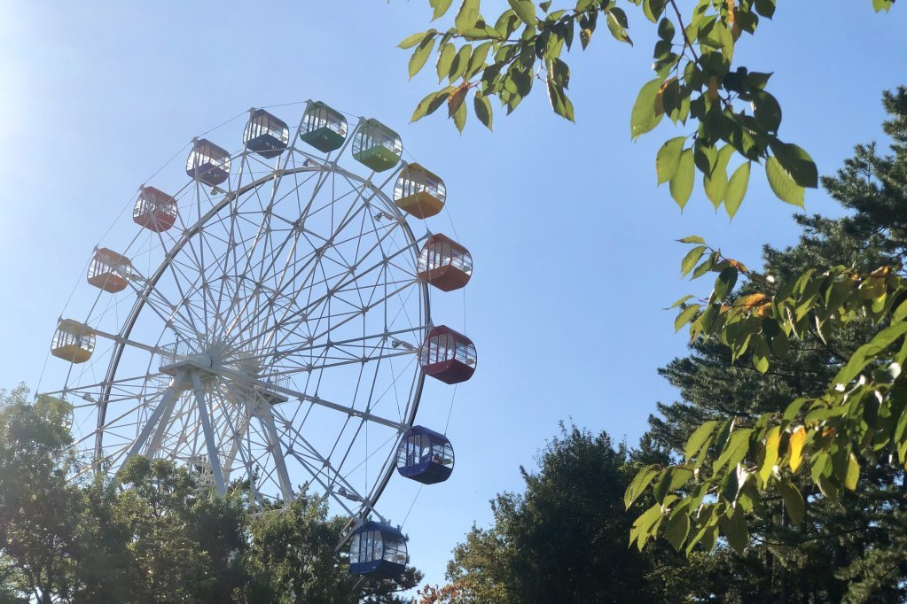
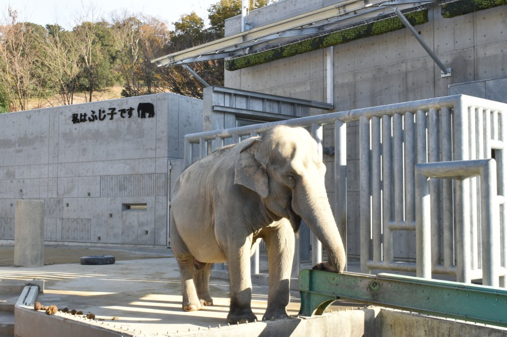

イオンモール岡崎は、2022年時点で全国6位の売り場面積を誇る、そこそこデカいイオンです。
お店の数も多く、ここで買えないものを探すほうが大変なレベルだと思っています。
イオンシネマも隣接しているので、１日中遊べます。

岡崎市の南に位置する「南公園」（名前そのまま）。
規模は小さいですが、1回100円以下で遊べることができちゃう激安遊園地です。
ファミリー向けなので、大学生が行っても楽しくないかもしれません。

岡崎市の東に位置する「東公園」（名前そのまま）。
入園料は無料で、全国でも珍しく無料でゾウなどたくさんの動物が見られます。
最近巨大な恐竜モニュメントも完成し、たくさんのファミリー客でにぎわっています。

岡崎市美術博物館は、建物自体がアートでインスタ映えもするおしゃれスポットです。
「マインドスケープ・ミュージアム」という愛称のもと、「心」をテーマにした美術品が収集・展示されています。
情報デザイン学科のみなさんにはぜひ訪れてほしいスポットです。